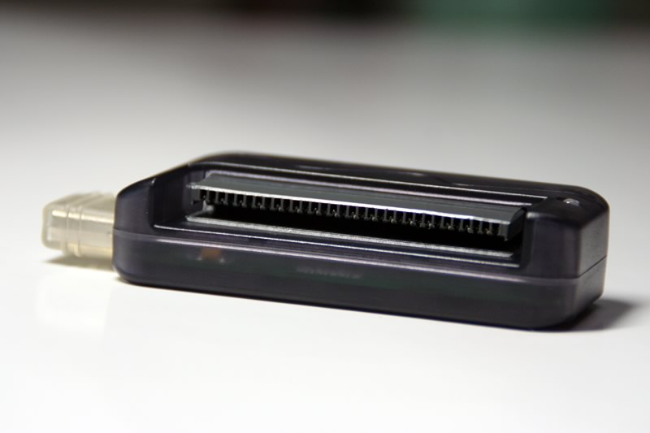
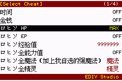
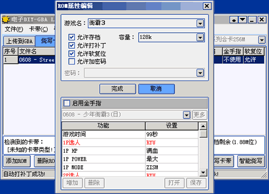

| | |
| 推出GBALink
USB独立烧录器！！！ |
2005年7月25日 |
| |
超酷便携 风速烧写 随心所欲DIY
最新推出GBALink USB独立烧录器：
 
(点击图放大)
特点如下：
1.特别为NDS设计，不需要GBA或GBASP主机。
2.外形小巧，自带USB插头，使用方便。
3.兼容性好，支持多种自己改造的FLASH卡带，玩家有更多选择。
4.速度快。读取：每秒460k左右，烧写：每秒220k左右。
注：智能烧写模式因要随时擦除卡带，速度每秒还保持在120k左右。
使用ZIPII 512M卡带测试烧写满容量256M数据仅需要4分48秒。
使用不同的计算机速度会有所差异。
5.可以对卡带存档电池充电。
6.配合新版本软件，具备自动刷新功能，使用更加方便。
|
| |
|
|
GBALink ZIPII 512M卡带 近期推出！
|
2005年4月25日 |
| |
续写ZIPII系列神话，再造烧录卡经典传奇
1.延续ZIPII系列的所有特点
·大容量压缩空间，解压缩速度超快
·实时时钟功能
·超强省电
·烧写快速
·超强金手指功能
·超级记忆系统（SMS）
·DIY个性化界面
...
2.极限压缩容量，压缩空间达到256兆，没有不能压的ROM! 这样真正实现了512M卡带当做1G卡带来使用
注：因GBA硬件限制，目前还没有出现超出256M容量的ROM，所以压缩容量超出256M将没有实际意义。
3.比ZIPII 128M和256M更加省电，有效延长游戏时间40分钟左右。
4.ZIPII 512M卡带具备以上强劲性能，但将具备实惠售价，敬请期待。


|
| |
|
|
GBALink配套软件4.50测试第1版
|
2005年2月5日 |
| |
新春佳节即将来临，EDIY小组全体成员祝新老朋友们：
天天快乐，事事顺心!
1.增加个性化界面功能。
(1).允许更换烧写等待画面、合卡菜单界面背景图、金手指界面背景图。
(2).允许改变主菜单界面、SMS界面、金手指界面、解压缩界面、密码输入界面、时
钟设置界面、错误窗口和提示窗口的各部分颜色，允许修改的设置项有73项。
(3).允许更换区分ROM类型的图标。
(4).各部分颜色均为真彩色设置(在GBA上显示时转换为32768色)，并且各部分的背
景均可以设置为渐变色(各设置项的背景色1和背景色2)，使显示效果更加丰富。
(5).装入的背景图和图标可以为任意大小，不是标准大小的图将自动缩放到240x160
分辨率，图标将缩放到16x16分辨率。背景图和图标均支持BMP、JPG、ICO、
WMF、EMF格式。 (ICO格式暂不支持缩放)
(6).使用刷新卡带功能可以随意修改已经烧写过内容卡带的界面。
(7).个性化界面设置可以保存为独立的界面文件（.skn扩展名），方便用户互相交
流。
注：个性化界面功能支持ZIP、ZIPII系列卡带，对128M专用合卡和普通卡带无效。
2.烧录软件增加2个界面效果:RealOne,MSN。并且界面各控件位置根据不同的界面效果自动调整对齐，更加整齐美观。
3.内置的GB/GBC模拟器更新为Goomba 2.1版、PCE模拟器更新为PCEAdvance7.2版。
4.增加26个ROM的金手指数据。
5.游戏中文名库更新到1877。
6.修正对ZIP系列卡带添加单个超出卡带容量ROM出现的ROM列表显示错误。
7.修正对选择ZIP2 128M卡带时，使用ZIP 128M卡带还正常烧写的问题。
8.修正“擦除卡带”功能中的一个错误，这个错误会引起用ZIP2系列卡带使用“烧写卡带 ”功能烧写后的数据不正确，但使用“智能烧写”功能没有问题。
9.修正对个别ROM存档补丁检测上的问题。
注意：
1.如果你的卡带使用的是4.50测试第1版以前的版本软件烧录的游戏，请先用以前的版本备份游戏进度。并且卡带已经烧写有游戏，请用4.50测试第1版软件重新烧写，否则将不能使用刷新卡带功能和存档备份更新功能。
下载请查看：GBALink配套软件下载
|
| |
|
|
GBALink配套软件金手指数据和游戏中文名库更新
|
2004年12月13日 |
| |
1.游戏中文名库更新到1838。
2.增加43个ROM的金手指数据。这些金手指数据均从网上收集整理，感谢制作金手指数据的朋友。
安装方法：
·安装前请关闭烧录软件
·将压缩包的所有文件解到GBALINK软件安装目录，比如C:\Program Files\GBALink
·运行烧录软件，软件会提示正在更新金手指文件索引
·在此后运行烧录软件时，即可正常为有对应金手指的ROM启用金手指
下载请查看：GBALink配套软件下载
|
| |
|
|
GBALink配套软件4.42正式版
|
2004年10月19日 |
| |
1.增强不同软件版本之间刷新卡带和存档备份的兼容性，只要新版本软件不出现结构性的修改就可以对老版本软件烧写的卡带进行刷新或备份存档。4.42正式版就可以对4.40以后版本烧写的卡带刷新卡带或备份存档。
2.在合卡菜单中增加软件版本号显示。
3.修正在一些情况刷新卡带后烧写的卡带出错的问题。
4.游戏中文名库更新到1715。
下载请查看：GBALink配套软件下载
|
| |
|
|
GBALink配套软件4.41正式版
|
2004年10月15日 |
| |
1.在上传GBA或烧写卡带的右键菜单中加入启动GBA的功能。
2.修正在一种特殊情况刷新卡带后，添加新ROM然后烧写卡带出现无法进入合卡菜单的问题。
3.修正在某些情况刷新卡带出错的问题。
4.修正对没有启用金手指的ROM刷新后启用金手指可能出现金手指无效的问题。
5.修正ZIP2卡带SMS数据存储太满有可能引起的卡带中第1个游戏无法进入问题。
6.修正GBA上存档管理功能中的一个错误，这个错误在存档数据过多时引起数据错乱，并且会出现无法进入游戏。
7.游戏中文名库更新到1711。
注意：
1.如果你的卡带使用的是4.41正式版以前的版本软件烧录的游戏，请先用以前的版本备份游戏进度。并且卡带已经烧写有游戏，请用4.41正式版软件重新烧写，否则将不能使用刷新卡带功能和存档备份更新功能。
下载请查看：GBALink配套软件下载
|
| |
|
|
GBALink配套软件4.40正式版
|
2004年10月12日 |
| |
根据论坛用户的反映，连夜修正了4.40正式版存档无效的错误。请下载过4.40正式版的用户重新下载安装。
下载请查看：GBALink配套软件下载
|
| |
|
|
GBALink配套软件4.40正式版
|
2004年10月11日 |
| |
1.改进压缩系统，高等级模式增强压缩比，解压缩速度保持和4.35版相同，比如新约圣剑传说汉化版原4.35版压缩后为76M，现在压缩后为74M，解压缩速度还为24秒左右。低等级模式增强解压缩速度，压缩比稍低，但也比4.40测试第2版有所提高，比如新约圣剑传说汉化版原4.40测试第2版压缩后为80M，现在压缩后为79M，解压缩速度为21秒左右。
2.对GOOMBA2.0、POCKETNES v9.97、PCEADVANCE v6.9支持软复位功能，这样也意味使用添加特殊ROM功能添加这些模拟器游戏合集也支持软复位。
3.在系统参数中增加“烧写卡带后自动进入合卡菜单”的选项，不选中时烧写完卡带不会自动进入合卡菜单。
4.修正添加ROM时的卡带容量计算错误，引起卡带容量变成负数的问题。
5.修正有时候使用刷新卡带功能软件出现错误的问题。
6.游戏中文名库更新到1701。
注意：
1.如果你的卡带使用的是4.40正式版以前的版本软件烧录的游戏，请先用以前的版本备份游戏进度。并且卡带已经烧写有游戏，请用4.40正式版软件重新烧写，否则将不能使用刷新卡带功能和存档备份更新功能。
下载请查看：GBALink配套软件下载
|
| |
|
|
GBALink配套软件4.40测试第2版
|
2004年9月30日 |
| |
1.进一步提升压缩ROM在GBA上的解压缩速度，现在的速度大约是以前的120%，也就是提高了大约20%。这样解压缩64M的黄金太阳是10秒，解压缩128M的新约圣剑传说汉化版是21秒，解压缩128M的续·我们的太阳是18秒。
2.增加138个ROM的金手指数据，这样GBALink烧录系统已经可以对1497个ROM支持金手指功能了。
3.游戏中文名库更新到1678。
注意：
1.如果你的卡带使用的是4.40测试第2版以前的版本软件烧录的游戏，请先用以前的版本备份游戏进度。并且卡带已经烧写有游戏，请用4.40测试第2版软件重新烧写，否则将不能使用刷新卡带功能和存档备份更新功能。
下载请查看：GBALink配套软件下载
|
| |
|
|
GBALink配套软件4.40测试第1版
|
2004年9月29日 |
| |
马上就是十月一日了，这个日子对于所有的中国人来说，这是一个重要的日子，是我们国家的节日，让我们一起衷心的祝福我们的祖国更加富足强大，统一大业早日完成吧。
这样的一个日子，对于我们EDIY小组的所有成员来说，更具有一层特殊的意义，因为2000年的十月一日是我们EDIY小组成立的日子。从2000年的十一到2004年的十一，四个年头一转眼就过去了，但这四年来的风风雨雨是我们无法忘却的；这四年来众多的朋友对我们的支持，是我们无法忘却的。
在这样一个日子马上要来到的时候，我们希望能奉献一些东西给大家，为此，小组的所有成员放弃了所有休息的机会，加班加点推出了GBALink最新的4.40版软件。
以下为新版软件更新的内容：
1.更换新软复位金手指系统。
(1).兼容性比以前更好，更多的ROM支持软复位和金手指功能。
(2).新系统不需要调用BOMA，对ROM处理的速度极快。
(3).无论ROM有什么样的片头，新系统都可以正确识别，所以取消了以前的“手动软复
位”功能，使软件操作更加方便。
这次更换新软复位金手指系统，增强了兼容性，并使软件操作更方便，为以后实现
在游戏中随时更改金手指状态和及时存档功能奠定了良好基础。
2.在添加ROM时允许直接加入金手指。这样对于需要压缩的ROM，就不需要因要在ROM属性中启用金手指而对ROM压缩2遍了。
3.自己定义软复位、游戏复位、金手指开关热键。
4.修正使用刷新卡带删除ROM后可能会引起的游戏无法进入的问题。
5.修正拖放到上传GBA的ROM打不开。
6.修正1653的存档补丁问题。
7.内置的模拟器更新为：(FC/NES)POCKETNES v9.97,(GB/GBC)GOOMBA v2.0,(PCE)PC-
EADVANCE v6.9。并且POCKETNES模拟器的文件名改为pocketnes.gba,不再为ediy.gba，当自己升级这个模拟器时需要覆盖pocketnes.gba这个文件，而用来完成GBA+FC合卡的POCKETNES模拟器的文件名改为EDIY.GBA。
8.游戏中文名库更新到1670。
注意：
如果你的卡带使用的是4.40测试第1版以前的版本软件烧录的游戏，请先用以前的版本备份游戏进度。并且卡带已经烧写有游戏，请用4.40测试第1版软件重新烧写，否则将不能使用刷新卡带功能和存档备份更新功能。
下载请查看：GBALink配套软件下载
|
| |
|
|
GBALink ZIP II第三方评测报告
|
2004年9月6日 |
| |
以下为魔剑士但丁和MSN-04 SAZABI对GBALink ZIP II进行的评测：
《ZIP II 抢先评测》--魔剑士但丁
《ZIP II 详细评测》--MSN-04 SAZABI
我们对以上两位朋友做出的公正评测深表感谢。另外，更多的评测文章请查阅近期各大掌机刊物。
|
| |
|
|
GBALink配套软件4.35正式版
|
2004年8月18日 |
| |
1.修正有时候烧写带金手指的ROM后，游戏无法进入的错误。
2.修正对洛克人4.5存档识别的错误。
3.修正保存ROM列表中的一个错误。
4.游戏中文名库更新到1627。
5.更新了繁体中文的游戏名库，这里下载。
下载请查看：GBALink配套软件下载
|
| |
|
|
正式推出128M ZIP II卡带
|
2004年8月13日 |
| |
128M ZIP II卡带的压缩空间为64M，可压缩64M及以下容量的ROM。具备ZIP
II系列卡带的所有新特性，烧写速度快，实时时钟功能，超强省电，建议零售价仅为248元。
|
| |
|
|
GBALink配套软件4.35测试第1版
|
2004年8月11日 |
| |
1.增加手动软复位功能，这项功能可以让有片头或有汉化模块的游戏使用软复位和金手指功能功能。使用手动功能,
需要在压缩或烧写带软复位游戏出现游戏窗口时,手动操作游戏到标题画面,然后按 ESC键关闭窗口。
2.增加IPS补丁功能，这个功能对普通卡带、128M专用合卡、ZIP系列卡带、ZIP2系列卡带都有效。这样对于普通卡带如果使用金手指IPS补丁，就可以对普通卡带增加金手指功能。
3.优化数据量很大的金手指处理速度，不会象以前出现象死机一样的情况。
4.对普通卡带修正对部分芯片检测和烧写上出现的错误。
5.修正自定义传输等待画面功能中的一个错误，不会出现更换某些特定的画面后出现GBA端程序出错的情况。
6.游戏中文名库更新到1624。
7.更新了繁体中文的游戏名库，这里下载。
注意：
因为4.30版以后的软件SMS功能加强了数据校验，修改了数据格式，所以烧写卡带之前，如果你的卡带中有4.30版以前软件生成的SMS数据，需要使用“卡带SMS数据管理”功能把卡带中的SMS存档逐个单独备份出来，烧写卡带后再添加进去。
对ZIP II卡带，口袋时钟正确设置方法如下：
第1次进入游戏，在游戏中设置时钟为AM00:00，存档，重新开关GBA。然后可以使用PC端软件的“卡带时钟同步”功能或在合卡菜单中按R+B键把时钟调整为正确时间，然后进入游戏，时钟就和正确时间同步了。
下载请查看：GBALink配套软件下载
|
| |
|
| 推出ZIP
II系列卡带！！！ |
2004年8月1日 |
| |
(点击图放大)
GBALink ZIP II卡带特点
1.独有压缩功能
压缩创造容量神话，飞速释放双倍空间
特点一 超大压缩空间
256M ZIP II卡带的压缩空间为128M，可压缩128M及以下容量的ROM
128M ZIP II卡带的压缩空间为64M，可压缩64M及以下容量的ROM
特点二 解压缩速度超快
32M的ROM解压缩时间是5秒！64M的ROM解压缩时间是12秒！
2.实时时钟功能
让游戏世界与真实世界同步
特点一 完美支持口袋妖怪系列、我的太阳系列
特点二 菜单界面自带时钟功能，可随时查看或调整时钟
3.耗电省
重新设计的电路，耗电量减小，有效延长游戏时间。并且使用压缩功能将更加省电。
使用美版GBA SP，开前光，最大音量，连续运行直到自动关机，测试结果如下：
0760-口袋红宝石(未压缩) 游戏时间为7小时25分
0760-口袋红宝石(压缩) 游戏时间为8小时12分
很耗电的游戏：
0682-星之卡比(未压缩) 游戏时间为6小时2分
0682-星之卡比(压缩) 游戏时间为6小时40分
附：掌机王第8期上各种烧录卡的耗电量评测 (点击图查看)
4.烧写速度快
配合GBALink USB烧录器，无论烧写多大容量的数据烧写速度均稳定在120k/秒左右。烧写满256M容量数据用时4分半左右。
5.性价比高
特点一 性能超强，具备目前市面烧录卡的所有功能，并有独创压缩功能、超强金手指功能、超级记忆系统（SMS）、实时时钟功能四大特色功能。
特点二 价格超低，ZIP II 256M卡带的建议零售价为428元。大大低于同类产品。
6.卡带品质更好
更换更专业的加工厂，焊接品质更好，返修率将更低。
|
| |
|
|
GBALink配套软件4.30测试第1版
|
2004年8月1日 |
| |
1.支持ZIP2系列卡带，卡带类型选择中增加ZIP2
128,ZIP2 256卡带类型。
2.对ZIP2系列卡带，合卡菜单中可以显示和调整时钟。
3.对ZIP2系列卡带，增加电脑和卡带时钟同步功能。
4.对ZIP2系列卡带，ROM参数中可以选择当前ROM是否使用时钟。
5.时钟功能完美支持口袋妖怪系列和我的太阳系列，并且烧写我的太阳可以自动增加按L键＋左右方向键调节太阳光强度功能。
6.支持拖放方式加载ROM。
7.修正并增强检测普通卡带功能。
8.在添加ROM的信息栏增加卡带剩余空间显示。
9.是否压缩ROM的提示窗中显示当前要压缩的ROM的大小。
10.增加2种界面风格mp10和Longhorn。
11.SMS功能加强数据校验，防止数据错误引起的死机情况。
12.修正删除游戏后，使用GBA上存档管理功能出现的错误。
13.内置的PCEADVANCE模拟器更新为6.7版。
14.内置的GOOMBA(GB)模拟器更新为1.9版。
15.ROM中文名库增加到1599。
16.增加388个金手指文件。
17.更新了繁体中文的游戏名库，这里下载。
注意：
1.如果你的卡带使用的是4.30测试第1版以前的版本软件烧录的游戏，请先用以前的版本备份游戏进度。并且卡带已经烧写有游戏，请用4.30测试第1版软件重新烧写，否则将不能使用刷新卡带功能和存档备份更新功能。
2.因为SMS功能加强了数据校验，修改了数据格式，所以烧写卡带之前，需要使用“卡带SMS数据管理”功能把卡带中的SMS存档逐个单独备份出来，烧写卡带后再添加进去。
下载请查看：GBALink配套软件下载
|
| |
|
| GBALink烧录器USB版强势出击！！！ |
2004年7月1日 |
| |
超酷便携 风速烧写 随心所欲DIY
最新推出GBALink USB版烧录器：
(点击图放大)
特点如下：
1.烧写速度特快。对于ZIP系列卡带，烧写满256M的数据仅需4分26秒，平均每烧写64M
仅需67秒。
2.体积小巧，外形超酷。
3.使用方便，支持热插拔。
4.支持自己改造的FLASH卡带。
5.支持以前并口版的所有功能。
6.性能大幅提升，价格保持不变，建议零售价仍为98.00元。
|
| |
|
| 关于GBALink产品的价格调整的通知！！！ |
2004年7月1日 |
| |
1.并口版GBALink烧录器性能提升，价格下降。
建议零售价即日起由98.00元调整为78.00元。
通过改进，并口版的GBALink烧录器的性能得到了较大的提升，主要表现在烧录速度上，例如：以前一台烧写速度为62K/s的机器，使用新的并口版后烧写速度提升为94K/s。不同的机器，速度提升也会有所不同。
2.ZIP卡带性能出众，价格更低。
ZIP 256M卡带建议零售价即日起由368.00元调整为348.00元。
ZIP_SE 256M卡带建议零售价即日起由498.00元调整为388.00元。
|
| |
|
| GBALink配套软件4.20正式版 |
2004年7月1日 |
| 关于本网站取消邮购业务的声明 |
2004年6月12日 |
| |
电子DIY小组在过去的几年中，陆续开发了多种产品，并逐步健全了销售网络。所以现决定从即日起取消本网站的邮购业务，今后我们将更专注于现有产品的软件升级和新产品的研发，以更好的产品回馈广大支持我们的朋友。关于由此产生的相关事宜解决方法如下：
1.所有已汇款的用户，仍会按时发货。
2.以后打算购买我们产品的用户，请在当地或附近的经销商处就近购买。
3.产品的售后服务均保持不变。所有我们的产品，均实行三个月保换、一年保修，以我们的封条为准，封条破损，不予保修。关于保修，可在原购买处解决，也可寄给我们解决。回邮地址不变，我们负责回程邮资。
|
| |
|
| GBALink配套软件4.20版说明书 |
2004年6月6日 |
| GBALink配套软件4.20测试第1版 |
2004年6月4日 |
| |
1.优化代码，在GBA上ROM解压缩速度提升250%，32M的玛丽2解压缩时间是5秒！64M的黄金太阳解压缩时间是12秒！
2.优化代码，提高烧写速度和稳定性，如果你的I/O延迟设置值大于0可尝试设置为0。
3.修正软件能打开多个的错误。
4.修正计算SMS存档剩余空间是否够用上的一个错误。
5.修正在普通卡带类型时自动检测卡带设置的卡带类型无效的错误。
6.内置的PCEADVANCE模拟器更新为6.5版。
7.内置的DRSMS模拟器更新为6.00版。
8.增加59个金手指文件。
9.ROM中文名库增加到1511。
10.更新了繁体中文的游戏名库，这里下载。
注意：如果你的卡带使用的是4.20测试第1版以前的版本软件烧录的游戏，请先用以前的版本备份游戏进度。并且卡带已经烧写有游戏，请用4.20测试第1版软件重新烧写，否则将不能使用刷新卡带功能和存档备份更新功能。
下载请查看：GBALink配套软件下载
|
| |
|
| GBALink配套软件4.10测试第2版 |
2004年4月9日 |
| |
1.修正某些情况下烧写完成后提示连接失败的错误。
2.修正电脑上“卡带SMS数据管理”功能的一些错误。
3.修正在0:00点左右烧写卡带时烧录时间和速度显示上的错误。
4.修正存档压缩功能的一些错误。
5.修正对Play Last Game项使用L+A键不能进入游戏的错误。
6.当添加ROM出现卡带空间不足提示错误时，提示当前添加的ROM的容量。
7.因在游戏中开关金手指的热键容易按成软复位热键，所以打开金手指的热键修改为START+L+R,关闭金手指的热键修改为SELECT+L+R。
8.ROM中文名库增加到1452。
注意：如果你的卡带使用的是4.10测试第2版以前的版本软件烧录的游戏，请先用以前的版本备份游戏进度。并且卡带已经烧写有游戏，请用4.10测试第2版软件重新烧写，否则将不能使用刷新卡带功能和存档备份更新功能。
下载请查看：GBALink配套软件下载
|
| |
|
| GBALink配套软件4.10测试第1版 |
2004年4月4日 |
| |
1.支持存档压缩功能
对存档进行压缩，使存档占用的空间大为减小。2M的SRAM存档空间可以同时支持一百多个游戏的存档。这个功能是与ZIP压缩功能相对应的，ZIP压缩功能可以写入更多的游戏，存档压缩功能保证更多的游戏都有存档空间。
(1).在GBA上支持压缩格式存档的管理功能（查看和删除）。
(2).电脑上的合卡游戏进度的备份和更新支持压缩格式的存档并允许删除存档操作。
(3).存档的压缩备份和切换由GBA上的软件自动完成，但如果进入游戏时因存档备份区空间不足引起不能保存上一个游戏的存档，用户可以选择是否放弃前一个游戏的存档进入游戏或者取消返回合卡菜单，然后可以删除不需要的存档或用SMS功能备份后删除腾出需要的空间。
(4).该功能只支持ZIP系列卡带。
2.支持在电脑上SMS存档管理功能，在电脑上对卡带的SMS数据进行备份、添加、删除、全删除操作。
3.支持在电脑上对卡带SMS数据整体备份、恢复功能。
4.开展金手指补完计划的第一步成果：增加171个金手指文件。金手指数据正在陆续补完中...
5.支持口袋叶绿，口袋火红的存档。
6.支持手动设置并口地址，这样对于一些PCI接口的并口扩展卡可以支持了。
7.改善连续功能操作的可靠性，连续功能操作时不再容易出现连接失败。
8.支持更换传输等待界面的背景图片，并支持调整图片的色彩饱和度。目前支持BMP格式，大小为240x160。
9.增加L+A键“冷启动”方式进入游戏，这样可以解决个别游戏不能用A键进入的问题。但L+A键进入时不能使用金手指功能，将直接跳过金手指选择界面。
10.软复位修改为“冷启动”方式，保证软复位的可靠性，解决了一些游戏软复位次数过多引起游戏死机的问题。
11.在GBA上的金手指界面增加L+R键返回合卡菜单功能。
12.在GBA上的金手指界面增加“Cheat Initial State（全局金手指初始状态）”的选择，这样解决了一些必须在游戏中才能打开的金手指引起游戏死机的问题。注意，默认初始状态是OFF（关闭），在游戏中如果要使用金手指时用SELECT+START+R键启用金手指。
13.对PocketNES、GOOMBA、PCEAdvance生成的ROM用BOMA1.2版补丁。(因为BOMA1.2对于一些游戏补丁错误，所以未全面升级为1.2版)
14.内置的PCEAdvance模拟器升级为6.2版。
15.因ZIP系列卡带增加支持存档压缩功能，对未知存档类型的ROM均默认设置存档为512K，解决一些新ROM的存档支持问题（比如图书仔II）。
16.修正对于个别ROM合卡后容量计算错误。
17.修正生成SEGA SMS ROM合集时的错误，SMS游戏可以正确运行了。
18.修正ROM名列表中的“大战争”被自动识别为“大战争2-黑洞的升起”。
19.修正对于手动选择特殊卡带类型时的错误。
20.ROM中文名库增加到1444。
21.更新了繁体中文的游戏名库，这里下载。
使用时请把这个文件romname.lst复制到安装好的GBALink软件的目录下，覆盖相同文件名的文件，这样在GBA的游戏选择菜单上即可显示繁体中文游戏名了。
注：在电脑的繁体操作系统上中文游戏名显示乱码是正常的，不会影响GBA上的显示效果。
下载请查看：GBALink配套软件下载
注意：如果你的卡带使用的是4.10测试第1版以前的版本软件烧录的游戏，请先用以前的版本备份游戏进度。并且卡带已经烧写有游戏，请用4.10版软件重新烧写，否则将不能使用刷新卡带功能和存档备份更新功能。
|
| |
|
| |
金手指补完计划
为了使GBALink产品的金手指功能更加强大、完善，我们将开展金手指补完计划。为此，我们特与模拟界的修改强人大胖子进行合作，将对GBALink软件配套的金手指文件进行全面整理、补充、测试。
今后GBALink的金手指无论在质量上还是完整性上都将得到完美的保证。GBALink的用户将可以使用上全套的金手指，并且今后将在第一时间享受到最新ROM的金手指文件的更新服务。第一步的成果将于新版本软件同时发布，敬请期待。我们将不断的努力，让每个选择GBALink产品的朋友玩的更好，玩的更开心！！
|
| |
|
| GBALink的4折页宣传册下载 |
2004年3月5日 |
| |

(点击图放大)

(点击图放大) |
| |
|
| GBALink的新颜色版、新包装 |
2004年3月5日 |
| GBALink配套软件4.00正式版 |
2004年2月9日 |
| |
1.修正使用添加特殊ROM功能时，因ROM容量太满后添加不上，引起最后一个已经添加的ROM的ROM名变化的错误。
2.修正有时候烧写卡带时传输进度条消失的错误。
3.增加3个金手指文件。
4.ROM中文名库增加到1372。
5.提供繁体中文的游戏名库，这里下载。
使用时请把这个文件romname.lst复制到安装好的GBALink软件的目录下，覆盖相同文件名的文件，这样在GBA的游戏选择菜单上即可显示繁体中文游戏名了。
注：在电脑的繁体操作系统上中文游戏名显示乱码是正常的，不会影响GBA上的显示效果。
6.提供DRSMS模拟器4.00版(最新的DRSMS模拟器是5.00版，但这个4.00版对某些游戏可能兼容性更好）。这里下载。
如果你需要使用这个4.00版时，请把这个文件drsms.gba复制到安装好的GBALink软件的目录下，覆盖相同文件名的文件即可。
下载请查看：GBALink配套软件下载
|
| |
|
| GBALink配套软件4.00测试第2版 |
2004年1月20日 |
| |
1.修正在GBA上使用SMS功能时用B键返回时主菜单显示上的错误。
2.内置的PCEADVANCE模拟器升级为5.5版。
注意：如果你的卡带使用的是4.00测试第2版以前的版本软件烧录的游戏，请先用以前的版本备份游戏进度。并且卡带已经烧写有游戏，请用4.00版软件重新烧写，否则将不能使用刷新卡带功能和存档备份更新功能。
下载请查看：GBALink配套软件下载 4.00版软件新增功能使用说明
|
| |
|
| GBALink配套软件4.00测试第1版 |
2004年1月19日 |
| |
新春佳节即将来临，EDIY小组全体成员祝新老朋友们：
天天快乐，事事顺心!
GBALink烧录系统4.0版软件隆重推出，新增三大特色。一切为用户着想，全部软件实现，用户无需花钱升级硬件，即可实现更新更酷功能。
一、首创超级记忆系统（SUPER MEMORY SYSTEM，缩写为SMS）
全新存档压缩、备份系统，给你海量存档，保证永不丢失。
无需购买新的FLASH卡带，通过软件方式即可通过在GBA上的操作将存档数据备份到卡带的FLASH区，保证存档数据永不丢失。相当于免费送你一个超大容量记忆棒。
独创存档压缩技术，可将存档压缩后备份到卡带的FLASH区，最多可备份128个游戏的存档，仅仅占用192K空间。

注：该项功能仅对ZIP系列卡带有效。
二、直接支持各种特殊ROM
NES\GB\GBC\PCE\GG\SMS 各种各样ROM，通通玩的转。
新增直接支持多种模拟器ROM，包括NES\GB\GBC\PCE\GG\SMS。其中GG\SMS更是独家支持，让你抢先体验世嘉游戏带来的快感。
利用GBALink的ZIP系列卡带压缩特性，更可以直接将这些模拟器ROM压缩后写入卡带，占用空间极小，能够容纳更多游戏。
三、软件界面可换
GBALink软件界面可以更换，二十多种风格任你随意选择。
MacOS风格的界面
WinXP风格的界面
GBALink4.0版软件其它更新内容如下：
1.更改语言包格式，增加切换字符集和字体切换。
2.修正有些游戏名中出现文件名不允许出现的非法字符引起不能备份和更新存档的错误。
3.修正当烧写满容量的128MROM时自动去除合卡菜单时的错误，引起256MZIP卡带单独烧写个别ROM不能使用金手指的错误（比如：1245）。
4.修正当只添加带软复位或金手指的压缩游戏时，不提示软复位金手指警告。
5.修正对直接添加的NES游戏设置的存档大小错误，引起烧写后备份和更新存档大小只有8K。
6.修正按照一种特殊顺序烧写带金手指的游戏出现不显示金手指界面的问题。
7.在GBA上解压缩进度改变为进度条显示方式，密码输入和解压缩界面变为窗口方式。
8.优化合卡菜单，容量更小。不使用SMS功能容量比以前减小25%，即使使用SMS功能也和以前持平。
9.因ZIP压缩方式比专用压缩方式的实用性相差太远，所以取消ZIP压缩方式，请大家使用专用压缩方式。
10.增加50个金手指文件（1301-1350）。
11.ROM中文名库增加到1352。
注意：如果你的卡带使用的是4.00以前的版本软件烧录的游戏，请先用以前的版本备份游戏进度。并且卡带已经烧写有游戏，请用4.00版软件重新烧写，否则将不能使用刷新卡带功能和存档备份更新功能。
下载请查看：GBALink配套软件下载 4.00版软件新增功能使用说明
下一版软件将实现的功能：
1.GBA端的个性化界面，让每个人都可以DIY自己的个性化界面，在GBA上展现丰富多彩的个人魅力。
2.进一步完善超级记忆系统（SUPER MEMORY SYSTEM，缩写为SMS）。
由于GBALink的ZIP卡带具备压缩功能，能写入比普通FLASH卡带超出1倍的游戏，需要更大的存档空间。所以将把存档压缩功能应用到SRAM区，让游戏的存档都以压缩方式存储，减少占用空间，让2M的SRAM区可以存储上百个游戏存档。这样当使用压缩功能向ZIP卡带中烧写大量的游戏时，可以保证每个游戏都能存档。
3.PC端SMS数据备份、恢复功能
......
|
| |
|
| GBALink
ZIP_SE 256M优惠购买 |
2004年1月13日 |
| |
为了让更多新朋友们充分了解GBALink ZIP_SE 256M卡带，享受ZIP功能带来的新奇体验。我们决定在春节期间对ZIP_SE
256M卡带举行优惠购买活动。活动日期：2004年1月13日至2004年2月5日。凡在该日期内购买GBALink ZIP_SE
256M套装或单卡的用户均可享受30.00元的优惠，即套装优惠价：566.00元，单卡优惠价：468.00元。此次活动用户无论在本站购买或者在指定的代理商或经销商处购买，都可享受该项优惠。
注：以上活动截止日期在本站邮购的以邮戳或银行汇款单据日期为准。
附：GBALink ZIP_SE 256M卡带特点介绍
1.独有压缩功能，最大可压缩128M的ROM，即市面上所有的官方ROM都可压缩，压缩功能可成倍扩大卡带容量，ZIP_SE
256M卡带可装入512M以上的数据量，已经超过了普通512M的FLASH卡带，但价格只有512M卡带的一半。
解压缩时间短，32M的游戏解压缩只需要11秒左右、64M的游戏解压缩只需要30秒左右，128M的游戏解压缩只需要60秒左右。(实测解压缩128M的中文版索尼克2仅需要52秒)
2.超强金手指功能，ZIP系列卡带具备超强的金手指功能，支持的游戏数量最多，金手指的各个项目都可以在GBA上进行单独的开关和设置，设置界面支持简体中文、繁体中文、英文和日文。真正做到了随时随地、随心所欲。

3.支持图形化中文菜单，咱中国人用着更方便、更容易。

4.做工精细，品质优秀，性能稳定。卡带外壳采用进口PC塑料制成，强度高，韧性好，耐磨损。即使多次插拔，表面也绝无擦痕。
(点击图放大)
(点击图放大)
5.独具金属盒加精美彩盒包装，具备收藏价值。
由于功能众多，不再一一介绍，详情请查看说明书。随着软件不断升级，更多更强更新功能等着你。
|
| |
|
| |
GBALink将和《掌机地带》杂志联办一系列有奖活动，机会多多，奖品多多，敬请期待。
(点击图放大)
|
| |
|
| GBALink配套软件3.61版 |
2003年12月21日 |
| |
1.改进ZIP卡带和VBA模拟器存档的互换兼容性。更新存档功能允许更新模拟器生成的非标准大小的存档文件，这样对于一些模拟器生成的EEPROM格式的存档可以直接更新入卡带内使用。并且备份卡带存档功能备份的EEPROM格式的存档也可以直接使用在模拟器上。
2.修正一个卡带检测提示上的错误。
3.修正有时候烧写完成后，GBA没有自动进入游戏的错误。
4.增加1个金手指文件(Max Payne)。
5.ROM中文名库增加到1336。
下载请查看：GBALink配套软件下载
|
| |
|
| GBALink配套软件3.60正式版 |
2003年12月19日 |
| |
1.增加256M ZIP_SE FLASH卡带的支持（该卡带支持128M超大压缩空间）。
2.改变刷新卡带后修改金手指属性的规则。
新规则如下：
----------------
原卡带烧写的不压缩游戏启用了金手指功能，在刷新卡带后可以关闭、启用、修改
这个游戏的金手指。并且只要原来卡带里不压缩的游戏启用了软复位功能，刷新卡带后
这个游戏就可以启用金手指功能。
但原来卡带里没有使用软复位或金手指功能的游戏，刷新卡带后将不能启用金手指
功能。另外对于压缩的游戏刷新卡带后不能修改金手指属性。
----------------
这项改动可能引起刷新以前版本软件烧写的卡带时出错，遇到这种情况用新版本软件重新烧写卡带即可。
3.改善在低内存低配置电脑上出现连接失败不能正常烧写卡带的情况。
4.修正按某种顺序烧写带金手指功能的游戏进入游戏后金手指无效的错误。
5.因某XXFLASH烧录软件直接盗用GBALink的游戏名库！所以改变ROM名的提取方式。用户如果自己添加新游戏的中文游戏名，需要提取ROM名时，请在ROM属性编辑窗口中的游戏名下拉框上点击鼠标右键，在弹出的菜单中选择“复制ROM名到剪贴板”即可。
6.ROM中文名库增加到1332。
7.增加12个金手指文件。
8.一些其它错误的修正。
9.提供繁体中文的游戏名库，这里下载。
使用时请把这个文件romname.lst复制到安装好的GBALink软件的目录下，覆盖相同文件名的文件，这样在GBA的游戏选择菜单上即可显示繁体中文游戏名了。
注：在电脑的繁体操作系统上中文游戏名显示乱码是正常的，不会影响GBA上的显示效果。
下载请查看：GBALink配套软件下载
|
| |
|
| 正式推出GBALink配套的256M
ZIP_SE FLASH卡带 |
2003年12月17日 |
| |
正式推出GBALink配套的256M ZIP_SE FLASH卡带。此次推出的256M ZIP_SE卡带，除了具备ZIP系列卡带的所有功能外，最大的特点是具备128M的超大容量压缩空间，可以支持128M容量的ROM的压缩。这就意味着几乎目前所有的GBA
ROM都可以压缩后写入卡带中。因此该系列卡带是GBA发烧玩家的超值选择。该系列卡带采用限量方式发售，数量有限，欲购从速。
购买请查看：GBALink购买
|
| |
|
| GBALink烧录系统常见问题解答 |
2003年12月13日 |
| GBALink
ZIP系列卡带推出多种颜色 |
2003年12月13日 |
| |
新卡带外壳是重新设计的，采用PC塑料注塑，更加坚固耐磨，现在拥有多种颜色，更加漂亮，有更多选择。
(点击图放大)
天空蓝(点击图放大)
柠檬黄(点击图放大)
苹果绿(点击图放大)
深海蓝(点击图放大)
购买请查看：GBALink购买
|
| |
|
| GBALink配套软件3.60测试第4版 |
2003年12月2日 |
| |
1.修正修改ROM属性后可能丢失存档属性的的错误。
2.修正金手指数据处理中的一个错误，这个错误可能引起刷新卡带时软件报错，并且可
能引起一些游戏在使用金手指时死机。
3.修正对金手指中一种数据格式的处理方法。
4.修正刷新卡带时如果没有TEMP目录时出现的错误。
5.可以识别并处理重复游戏名的金手指文件。
6.ROM中文名库增加到1300。
7.增加6个金手指文件。
下载请查看：GBALink配套软件下载
|
| |
|
| GBALink配套软件3.60测试第3版 |
2003年11月24日 |
| GBALink配套软件3.60测试第2版 |
2003年11月24日 |
| |
1.增强对格式不标准的金手指文件的处理能力，这样软件在加载个别金手指时将不再出错。
另外本软件的金手指文件均为网上收集整理的，由于这些金手指文件存在格式不规范或者格式错误的情况，对于格式错误的金手指可能会引起游戏死机或者存档丢失等情况。
需要提醒大家注意的是，这并不是3.60版软件的问题。关于这个问题，我们今后有发现的，会对金手指文件做出修正，用户也可自行修正有格式错误的金手指文件。
下载请查看：GBALink配套软件下载
|
| |
|
| GBALink配套软件3.60版说明书 |
2003年11月23日 |
| GBALink配套软件3.60测试第1版 |
2003年11月23日 |
| |

1.增加金手指功能
这次开发的金手指功能，无论从功能上、操作界面上、支持的游戏的数量上都超过市面上的金手指卡，GBALink的金手指功能的部分特点如下：
(1).金手指功能使用方便。用户无需计算机，无需重新烧写，就可以在GBA上随意选
择使用金手指的各项功能。
(2).金手指和ROM自动对应。添加某个ROM时，软件会自动调用对应的金手指文件，
无需在几百个文件中手动选择。对于没有自动对应的ROM可以使用金手指编辑界面
上的“更多”功能来手动选择。
(3).新游戏的金手指文件更新方便。无需等待软件更新，对于新推出的游戏，用户
可随时把网上或其它地方找到的金手指文件复制到软件对应目录下使用。当添加了
新的金手指文件时，打开GBAlink软件将自动重建金手指的索引文件，如果出现重
建索引失败，请检查新加的金手指文件的格式是否正确。
(4).在GBA上金手指选择界面可显示英文、简体中文、繁体中文和日文，查看方
便。
(5).与金手指卡相比，在GBA上选择金手指功能时，可以支持更多的选项，每个
选项下可支持多个值，比如一些RPG游戏中的道具、武器等，功能更强大。
(6).金手指功能和软复位功能有机配合，在软复位后保存上次选择的金手指状态
（对于压缩的游戏也有效），再次进入游戏方便重新修改金手指状态。
(7).在游戏中可以随时开关金手指。使用START+SELECT+R:打开金手指，
START+SELECT+L:关闭金手指，并且打开或关闭时GBA画面有暂时白屏提示（对于
部分游戏白屏提示功能无效，但开关金手指功能正常）。
(8).原卡带烧写的游戏启用了金手指功能，在刷新卡带后可以关闭、启用、修改
这个游戏的金手指。并且对于原卡带只要有一个游戏启用金手指，其它只启用软
复位的游戏在刷新后也可以启用这个游戏的金手指。但原来卡带烧写的游戏没有一
个启金手指，刷新后将不能启用金手指功能。
(9).在进入游戏前选择金手指时可以快速打开和关闭全部金手指：SELECT+A打开
全部金手指，SELECT+B关闭全部金手指。
(10).GBALink的金手指数据采用的是国内流行的CHT格式(EmuCheat)，金手指
数据来源充足，并且方便增强新游戏的金手指。当前版本的金手指数据文件更新
到1289。
(11).在PC上可以编辑金手指，并且增加金手指功能可增加8、16、32位的数据。
(12).打开软件后第1次烧写带软复位或金手指的ROM时将弹出窗口提示软复位和金手指
功能使用上的注意事项。
注：
(1).金手指的功能项和设置项数量是有限制的。功能项最大32项，设置项最大15项。
在金手指编辑界面对于设置项超出限制的项目显示为红色，用户可以双击该功能
项来选择设置项中的15个值，如果没有选择，在烧写到卡带上时将自动截取前
15项。对于功能项超出32项的，可以使用金手指的“删除”功能把来选择其中的
32项，如果在退出ROM编辑时还是超出32项，将出现提示，并且在烧写到卡带上时
将自动截取前32项。
(2).金手指功能是要利用ZIP卡的特性，所以金手指功能只能使用在ZIP卡上。
(3).本软件包含的6XX个金手指数据均为从网上收集整理的，感谢制作金手指的各位朋
友。
2.对不同的连接失败增加不同的建议处理方法提示。
3.增加卡带密码功能，在“系统参数”中设置卡带密码。
4.合卡菜单在切换画面时增加淡入淡出效果。
5.使用GBK大字符集字库，这样在GBA上可以显示英文、简体中文、繁体中文和日文字符（繁体中文和日文字符目前需要用户自行转内码）。
6.加入POCKETNES9.8,并且POCKETNES的EXIT功能可以返回合卡菜单。
7.改进ROM名提取方式，对于自动替换游戏中文名功能和自动对于金手指功能中用到的 ROM名增加4字节ROM代码，这样更加精确的对应ROM。
8.改进GBA端验证密码时的方法，在GBA端验证密码时校验密码长度，更加可靠。
9.对于ReadBoy、PictureBoy等生成的ROM自动把文件名追加到ROM名后(只追加文件名，没有扩展名)。
10.识别PocketGB、goomba10、图书仔1.35生成的ROM，并相应调整存档空间。
11.修正个别游戏用专用格式压缩后在GBA上解压时出错，比如“007夜火”。
12.支持马里奥和路易的EEPROM V124存档格式。
13.ROM中文名库增加到1289。
下载请查看：GBALink配套软件下载
|
| |
|
| |
1.《模拟与游戏》第11期的文章《秀出你的个性－－GBA大变脸行动》的GBA和GBASP变脸的模板文件和示范效果图片下载。
2.《模拟地带》第14期的文章《自己动手打造GBASP的调光系统》的单片机程序下载。
|
| |
|
| GBA相关工具软件下载更新 |
2003年10月28日 |
| |
1.GOOMBA V1.0
这是PocketNES、PCEAdvance的开发者FLUBBA最新制作的GBA上的GB模拟器，第一版就做的相当不错，图像显示完美、支持声音、支持存档、支持GB合卡、兼容性好，简直就是众玩家的福音，强烈推荐下载。这里是GOOMBA的兼容性列表
2.GBAJpegViewer2.3 汉化版(感谢鸵鸟)
非常不错的GBA的图片转换工具最新2.3版本，加入了色彩抖动系统，可极大提高显示质量；以及“亮度”和“对比度”设置，少许加快了
jpeg 的压缩速度。在幻灯片模式中加入了暂停功能，在缩略图模式中可显示更多的图片信息。
拥有 保存/读取 图片列表，以及实用的“缩略图模式”。与2.2版本一样支持大范围的图片手动调整和新的分辨率设置;Rom密码、手动调整图片以及图片锐化（可提高图片质量）等多项实用的功能。支持*.gif
*.png *.bmp *.pcx *.tiff *.jpg等等多种格式。
该2.3汉化版还汉化了英文的readme中的使用说明和2.3版本更新，以方便英文不好的朋友使用。
新的汉化版经过了鸵鸟的认真汉化，在文字汉化和界面调整方面均比其它以前的汉化版本大大增强。同2.1版一样修饰了原版粗糙的界面，让使用者看得更清楚，用得更舒畅。
下载请查看：GBA相关工具软件下载
|
| |
|
| GBA
Link配套软件3.50正式版 |
2003年9月28日 |
| |
1.修正多语言显示，现在繁体中文、日文可以正确显示了。
2.修正当多选ROM添加时超容量的ROM进行压缩的错误。
3.修正打开ROM列表功能软复位参数的错误。
4.对于ReadBoy、PictureBoy等生成的ROM自动把文件名追加到ROM名后。
5.ROM中文名库增加到1175。
6.一些其它错误的修正。
下载请查看：GBA Link配套软件下载
|
| |
|
| GBA
Link配套软件3.50测试第3版 |
2003年9月15日 |
| |
1.修正在添加有些ROM时选择压缩模式出现的错误。
对于一些朋友提到的烧写一些ROM出现死机白屏等问题，添加ROM后可以关闭ROM属性中的“允许软复位”来解决。如果你需要使用软复位功能，对于一些有片头的ROM（比如一些汉化版的游戏）可以在加载ROM时选择去除片头来解决。
下载请查看：GBA Link配套软件下载
|
| |
|
| GBA
Link配套软件3.50测试第2版 |
2003年9月12日 |
| GBA
Link配套软件3.50测试第1版 |
2003年9月10日 |
| |
1.自动调用BOMA，实现增强的按键回菜单，对几乎99%的游戏都可以使用SELECT+START
+A+B组合键进行游戏复位，使用SELECT+START+L+R组合键返回ROM选择菜单。这项功
能仅对ZIP系列卡带有效。
另外对于一些有片头的游戏（包括一些汉化的游戏），因为片头是不能去掉的，所以
BOMA处理后将可能引起游戏死机，所以对于这些游戏请谨慎使用该功能。
2.增加ROM加密码功能。密码抛弃平常的字母或者数字的输入方式,使用GBA按键的组合,
更加贴切，使用更加方便。比如现在可以使用“↑↑↓↓←→←→ＢＡＢＡ”来做为
ROM的密码，在GBA上只要按照顺序按下相应的按键，然后按下START键即可。
在PC上设置密码时可以使用密码输入下拉框来选择已经设置好的密码，或者使用特定
的按键来手动输入，"I K J L"是GBA的上下左右键，"Z X"是GBA的AB键，"A
S"是
GBA的LR键，其中方向键支持4个斜方向。这项功能对ZIP系列卡带和128M专用合卡均
可使用。
3.为处理软复位和金手指功能，卡带类型及容量需要用户指定。也就是说如果你使用的
是ZIP256M卡带就在软件右上角的下拉选择框中选择“ZIP系列合卡256M”。
为简化卡带类型的选择，当ROM列表为空时，使用检测卡带类型或刷新卡带功能检测到
何种卡带，就自动设置为何种卡带类型。
4.刷新卡带按钮在普通卡带和128M专用合卡下可以做为检测卡带类型功能使用。
5.加入TE系列INTEL芯片ID，支持TE系列芯片。(这项未测试)
6.ROM参数里增加是否打补丁选项，可以单独选择每个ROM是否打补丁。
7.自己手动改动的ROM中文名等参数能够保存进ROM列表文件，以便下次载入时能够自动
设置。
8.ROM中文名库更新到1148。
另外：金手指等功能因为时间关系还未完善，所以请等待下一版本开放。
下载请查看：GBA Link配套软件下载
|
| |
|
| 最新推出ZIP系列64M卡带 |
2003年9月10日 |
| |
(点击图放大)
最新推出ZIP系列64M卡带。此次推出的64M卡带，具备ZIP系列卡带的所有特点，软件升级后还可支持软复位、密码保护、金手指等功能。支持合卡功能；采用全新FLASH芯片，100万次擦写寿命；采用充电电池，保证存档不丢失。支持16M以下容量的ROM的压缩功能，可以对电子书，NES游戏等进行压缩，充分扩充卡带容量。与同系列的128M和256M的卡带相比，更具有价格低廉的优势。是经济不太宽裕的朋友的首选。
购买请查看这里：GBALink烧录系统购买
|
| |
|
| GBALink一岁了！特推出纪念版新包装！ |
2003年9月1日 |
| |
庆祝GBALink诞生一周年！
特推出纪念版金属＋彩盒包装！
(点击图放大)
(点击图放大)
(点击图放大)
(点击图放大)
|
| |
|
| |
1.CalcMeteo V1.01计算软件
CalcMeteo V1.01版把电影长度输入方式修改为小时：分钟：秒的方式。但秒还是可以输入超过60的数字，这样如果你只想用秒来计算的话，也很方便。
2.Meteo v1.31-超强的GBA电影制作软件 汉化版(感谢鸵鸟)
这是一个制作GBA电影的软件，转换速度快，可以直接转换AVI或MPG电影文件，码率可以随意调整，并且可以预计生成的文件大小，方便了烧录到卡带中。这个软件制作的电影画质和音质都比较理想，另外不像Videogba还有个老虎头的标记。有烧录卡的朋友有个新玩法了。
下载请查看：GBA相关工具软件下载
|
| |
|
| 推出CalcMeteo
V1.0计算软件 |
2003年8月15日 |
| |
CalcMeteo是配合Meteo来计算最佳图像码率和计算生成电影大小的工具软件。主要用于帮助使用GBA烧录卡的朋友，能够非常方便的制作出与卡带容量相适应的，并且图像质量最佳的GBA电影文件。
当指定卡带容量计算最佳图像码率时你只需要在卡带容量选择框中选择你的卡带容量(或者手工数据卡带容量，卡带容量是以M位为单位)，然后输入待转换的电影的长度，然后点击左上角的计算按钮就可以计算出最佳的图像码率。你可以把这个最佳码率输入Meteo中就可以制作出适合你的卡带容量的电影了。
指定码率计算生成的电影大小功能使用方法同上。
这里要说明一点，图像码率的有效范围是0-500，输入时不能超出这个范围。并且对于不同的电影文件，可能出现过小的码率得到相反的结果，也就是生成的GBA电影文件过大。对于网络上流传的17k最小码率限制，并不是这么回事，图像码率是可以小于17k的。
软件下载请查看：GBA相关工具软件下载
|
| |
|
| |
Meteo v1.31-超强的GBA电影制作软件
这是一个制作GBA电影的软件，转换速度快，可以直接转换AVI或MPG电影文件，码率可以随意调整，并且可以预计生成的文件大小，方便了烧录到卡带中。这个软件制作的电影画质和音质都比较理想，另外不像Videogba还有个老虎头的标记。有烧录卡的朋友有个新玩法了。
码率计算方法：
画面码率（质量）可在软件中自行设定。声音是固定码率，大约10K/秒。这样对于256M的FLASH卡带，如果画面码率（质量）设置为32K/秒，可以存储超过10分钟的动画（电影），这种情况下，画面和声音质量都比较不错。
在32k码率下的计算公式：
卡带容量(M位)*128/(32(画面码率)+10)=播放时间
128M卡带大约可存储6分半动画
256M卡带大约可存储13分动画
根据卡带容量计算最佳画面码率的方法：
如果一个电影是300秒，需要烧录到128M卡带上，这样计算：128*128/300-10=44.6(画面码率)，公式是：卡带容量(M位)*128/电影长度(秒)-10=画面码率。
软件下载请查看：GBA相关工具软件下载
制作好的示范电影下载：滨崎步的MTV-LOVE(16213k),小小FLASH1(2124k)
|
| |
|
| GBA
Link配套软件3.25测试第3版 |
2003年8月7日 |
| |
1.修正对已经烧写好的卡带进行修改、删除和添加ROM时有时候出现的错误。
2.ROM中文名库更新到1120。
3.对超级玛丽4不打补丁，解决超级玛丽4的死机问题。
下载请查看：GBA Link配套软件下载
|
| |
|
| |
还记得Whowe吗，他曾经做的POCKETNES修改版。这里有两个他写的GBA游戏，一个是“特训”，另一个是“扫雷”。喜欢的朋友可以下载试玩。
扫雷 特训
下载：扫雷 特训
|
| |
|
| |
一个国内网友开发的GBA上的贪吃蛇游戏，有兴趣的可以下载试玩。
下载：贪吃蛇游戏
|
| |
|
| |
关于“设计ZIP卡带合卡方案，得免费GBALink烧录系统”活动结束的声明
一、“设计ZIP卡带合卡方案，得免费GBALink烧录系统”活动已经结束。截止日期为2003年8月2日17:00整。
二、由于最近搬家，非常繁忙，所以一直没有很好的顾及到该活动，从统计结果来看，不是很理想。一方面参加的人数不是非常多，另一方面大家可能对规则不是很理解，没有人去评分，这样就无法统计结果了。但是为了感谢大家对我们的支持，我们决定把奖励方式做了一些变通。即所有参加该活动，发表过方案的朋友都可以得到一套新版的GBA
Link烧录器作为纪念。
三、得奖名单
82俄我惹92、sbug、k24680、xt13、bicanyang、wind_ustb、Z-ASURADA、klaud
zlebr、zxthb、ducklovechicken、monkeys、alucard&able、bubu、ttb、 zaopuppy、cqnet、AAABBBCCCDDD、蝙蝠公子sp、zbx_god、cellcat、jyczeal
zjm1998虽然没有发表方案，但鉴于该朋友积极的参与了评论，所以同样赠送一套新版GBA LINK烧录器作为纪念。
以上朋友请尽快以悄悄话方式将联系地址和姓名发给river，以便发放奖品。
四、得奖的朋友务必在8月17日之前将地址信息告知我们，逾期视为自动放弃。
查看：有奖活动专区
|
| |
|
| |
1.GBAJpegViewer2.1 汉化版(感谢鸵鸟)
非常不错的 gba 的图片转换工具最新2.1版本，支持更大范围的图片手动调整，并且加入了新的分辨率设置。与2.0版本拥有Rom密码、手动调整图片以及图片锐化（可提高图片质量）等多项实用的功能。支持*.gif
*.png *.bmp *.pcx *.tiff *.jpg等多种格式。
新的汉化版经过了鸵鸟的认真汉化，在文字汉化和界面调整方面均比其它以前的汉化版本大大增强。同2.0版一样修饰了原版粗糙的界面，让使用者看得更清楚，用得更舒畅。新版同旧版一样无需安装，解压即可运行。
1.Boot-o-Mat Advance 1.1及汉化版
Boot-o-Mat Advance是一个给ROM打补丁的软件，它的功能是与烧录卡相配合，可以使99%的GBA ROM实现四键回菜单功能。使用过烧录卡的朋友都知道，四键回菜单功能只能对部分游戏有效，这给使用带来了很多不便。现在使用BOMA这个软件可以让99%的游戏都能支持四键回菜单功能。这就是这个软件非常值得我们关注的特点。
论坛中汉化版的说明：这个软件是Ez-flash论坛上一个叫52611314的网友汉化，并由一个叫 库库A 的网友修饰过的。
下载请查看：GBA相关工具软件下载
|
| |
|
| |
购买地址更换为：
汇款地址：深圳市南油054-25
收款人姓名：付莹莹
邮编：518000
银行卡也做相应改动，详情请查看购买页面。
对于已经汇款到原洛阳地址或转账到洛阳银行卡的用户我们有专人处理，不会耽误发货，请用户放心。
|
| |
|
| |
1.GBAJpegViewer2.0 及汉化版(感谢鸵鸟)
这是一个很不错的在GBA上查看JPEG格式图片的工具软件，这样可以在GBA上用有限的卡带空间查看巨多的图片。这个版本在GBA上查看图片速度比以前的版本提高了3倍!!新增了密码功能；可以选择一个区域来转换JPG图像（适合于查看漫画）；增加了图像锐化/文本增强功能，不过这个功能会增加JPG文件的大小。
下载请查看：GBA相关工具软件下载
|
| |
|
| GBA Link配套软件3.25测试第2版 |
2003年7月9日 |
| |
1.Boot-o-Mat Advance
Boot-o-Mat Advance是一个给ROM打补丁的软件，它的功能是与烧录卡相配合，可以使99%的GBA ROM实现四键回菜单功能。使用过烧录卡的朋友都知道，四键回菜单功能只能对部分游戏有效，这给使用带来了很多不便。现在使用BOMA这个软件可以让99%的游戏都能支持四键回菜单功能。这就是这个软件非常值得我们关注的特点。
软件使用说明及下载请查看：GBA相关工具软件下载
|
| |
|
| GBA Link配套软件3.25测试第1版 |
2003年7月8日 |
| |
这一版软件的改进如下：
1.增加保存、打开ROM列表的功能。这个功能在主菜单的文件菜单下或ROM列表的右键菜单中调用。
2.对ZIP系列卡带增加对已经烧写好的卡带进行修改、删除和添加ROM的功能。修改可以完成修改ROM的中文名、英文名、修改存档属性；删除或添加ROM是从最后一个游戏开始进行。具体方法如下：
(1).对ZIP系列卡带在界面上增加了一个“刷新卡带”的按钮，首先点击这个按钮，软
件会把卡带中已经烧写的游戏清单列出来显示在ROM列表中。
(2).现在就可以双击ROM列表中具体的ROM来修改ROM的属性，或者使用“删除ROM”来
从最后一个ROM开始删除ROM，或者使用“添加ROM”来添加新的ROM。
(3).使用“智能烧写”来把修改过的属性或添加的新ROM烧写到卡带中去。
3.备份游戏存档或保存ROM列表时，重名文件提示用户是否覆盖。
4.修正错误，在系统参数中选择不加入合卡菜单时不再提示压缩ROM。
5.ROM中文名库更新到1090。
下载请查看：GBA Link配套软件下载
利用ZIP系列卡带的特点，预计以后版本软件将增加的新功能：
1.金手指。
2.增强的4键复位（对几乎所有的游戏有效、并且和ROM原复位功能不冲突）。
3.ROM加密码。
4.即时存档。
5.合卡菜单和传输等待界面的个性化。
|
| |
|
| 设计ZIP卡带合卡方案，得免费GBALink烧录系统 |
2003年7月2日 |
| |
“设计ZIP卡带合卡方案，得免费GBALink烧录系统”活动正式开始!!!
因为有朋友来询问关于ZIP怎样合理使用，才能充分发挥它的优势，所以突然就有了这样一个想法。打算搞这样一个活动，让大家充分发挥自己的智慧，提供一些优秀的使用方案，给大家以更多的启发，让ZIP卡带能给大家带来更多的乐趣。当然，为了让活动更生动一些，我们提供一些产品，包括256M、128M卡带和GBALink作为奖品。
这个活动要求大家利用压缩功能提供一套或多套烧写合卡方案来说明怎样充分利用卡带更好的达到娱乐的目的，所有的人都可以参加这个活动，只要下载一份3.22第2测试版软件，针对128M的ZIP卡带或256M的ZIP带，根据自己的设想，提出自己的合卡方案，放抓图出来，并且附上方案的说明即可。
欢迎大家积极参加和评分，大奖等着你！
详情请查看这里：有奖活动专区
|
| |
|
| |
1.GBAJpegViewer v1.2
最新的这个1.2版在GBA上查看图片速度提高了10-15%，并且支持太小的图像自动居中显示等功能。
详情及下载请查看这里：GBA相关工具软件下载
|
| |
|
| |
1.GBAJpegViewer v1.1
一个很不错的在GBA上查看JPEG格式图片的工具软件，这样可以在GBA上用有限的卡带空间查看巨多的图片。你可以加入任何大小的JPG、GIF、BMP图片，它会自动缩放并转换成合适大小的图片，并且还可以调整图片的亮度，以方便在GBA上观看。
2.unique-phloam-GBA.zip
一个超炫的、动感十足的演示程序，推荐。
详情及下载请查看这里：GBA相关工具软件下载
|
| |
|
| 推出GBALink128M合卡及相关软件 |
2003年3月5日 |
| |
由于网站服务器的故障，网站一直无法访问，所以直到今天才能来更新几条旧新闻。
1.本站启用新邮箱：ediy@vip.163.com，如果你发邮件到ediy2000@sina.com长时间没有回复的话，可以发到这里试试。
2.关于GBALink 128M合卡的一些资料：
(点击图放大)
(1)卡带采用蓝色透明外壳，标准小卡。
(2)卡带是工厂直接加工好的，不是改造的，工作更稳定可靠。
(3)支持合卡功能。可以支持多个GBA ROM的合卡功能。有四个存档空间，可支持多个
游戏的存档。
(3)采用充电电池。无需担心电池耗尽，丢失存档。
(4)合卡菜单支持中文游戏名。符合中国人的习惯，使用更方便。
在GBA游戏机上运行的效果：中文菜单、英文菜单。
合卡测试的视频片断下载（选择进入第一个游戏《龙战士》、选择进入第二个游戏《超级马力3－耀西岛》）
购买请查看这里：GBALink烧录系统购买
3.发布GBA Link配套软件3.10版。
1.配合GBALink专用的128M卡带支持合卡功能，可以写入多个GBA游戏。并且合卡支持多GBA游戏合多NES游戏的功能，你可以直接在ROM列表中加入NES游戏。
2.合卡菜单支持中文游戏名，软件支持自动把游戏名替换为中文名、英文名或ROM名，用户也可以自己编辑游戏名。
3.对合卡支持同时按下GBA的“Start”、“Select”、“A”、“B”键回到ROM选择画面。不过这个功能并不是对所有的GBA游戏都有效。
4.在ROM列表的右键菜单中增加ROM烧写之前的试运行功能。
5.新增日文语言包。感谢:Barbiesos(葛凡;妺杴;contect to barbiesos@163.com)
下载请查看：GBA Link配套软件下载
|
| |
GBA Link烧录系统更换新包装了！ :)
全套的GBA Link烧录系统(点击图放大)
GBA Link烧录系统的包装盒(点击图放大)
使用新外壳和电缆的GBA Link(点击图放大)
Gba Link配套的64M Flash卡带(点击图放大)
|
| GBA
Link烧录系统正式推出！ |
2002年9月1日 |
| |
你可以来这里下载升级你的GBA Link软件，当前的版本是1.0。
|
| |

你喜欢GBA吗？那么你也会喜欢上GBA Link的；你拥有一台GBA吗？那么你也应该拥有一套GBA Link。GBA Link的魅力何在呢，因为它具备三大功能:
第一大功能是使用电脑存取游戏进度。
第二大功能是无需任何卡带玩FC(NES)游戏。
第三大功能是DUMP卡带ROM。
详情请查看《GBA Link》，购买请查看《GBA
Link购买》。
|
| |
大概是两年前，那时网上刚有人提到游戏手柄改造的事情，我们和皮球在MONSTER的论坛相遇，互相交流了一些手柄改造的经验，于是乎就有了一些交情。大概是一年前，我们开始做了自己的网站《电子DIY》。之后，再次遇到了皮球，并得到了他的一些帮助，而他已是《EMU-ZONE》的一员了，这样就结识了龙二、cotolo等朋友，经过了一段时间在OICQ上的交流后，大约是惺惺惜惺惺吧，就想一起来做些什么，于是就有了这个网站《模拟器硬件DIY》。
这个网站能为大家提供些什么呢？我想是这样的，一个是能够自己动手做的，主要是游戏机、模拟器相关的硬件制作和改造，可为你的游戏机或电脑扩展功能、改进性能、增加游戏的刺激性。我们会力争把这些文章写的通俗易懂，让朋友们能够自己动手来完成。另外是一些资料，包括游戏机和电脑的硬件资料和开发资料，这些资料是硬件制作和改造的基础和依据，大家可以拿来参考。
专门的模拟器硬件网站在国内也是比较少见的，我们这个网站在建设方面也可能还有不足之处，我们衷心希望支持我们的朋友能够将意见和设想告知我们，大家共同来建设好这个网站。
|
|
| |